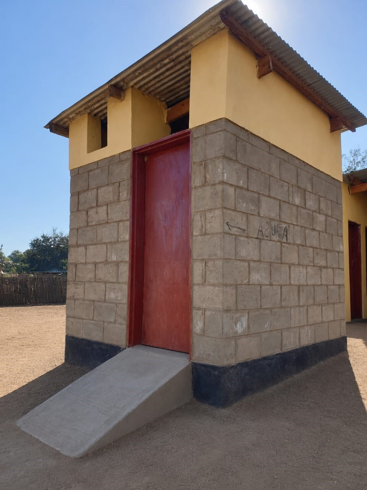

01. Community-Led Total Sanitation (CLTS) Mobilization
Our operational framework triggers deep structural behavioral shifts through participatory community mapping workshops. By visually tracking pathways of open contamination, village groups collectively acknowledge critical environmental health challenges, initiating self-funded campaigns to declare their home zones entirely open-defecation-free.

02. MaTech Eco-Friendly Latrine Implementation
Field technicians roll out low-cost, smart masonry designs that maximize structural durability while ensuring clean subsoil containment lines. These ventilated improved pit models feature simple, washable slabs and secure mesh vents that effectively seal away disease vectors, protecting adjacent shallow household water lines from cross-contamination.

03. Institutional WASH Facilities for Schools
We deploy heavy-duty sanitation blocks across remote regional primary schools to secure healthy and safe learning spaces for young pupils. These customized school installations incorporate separate private cubicles, rainwater storage tanks, and robust graywater filtration grids engineered to remain functional under heavy daily student usage parameters.

04. MaTech Handwashing Sink Networks
To eliminate touch-based germ transmission paths, we install foot-pedal mechanical sinks built exclusively from resilient localized components. Strategically stationed at market entries, community centers, and school yards, these systems allow users to clean hands effectively without handling shared taps, drastically lowering pathogen transmission metrics.

05. Menstrual Hygiene Management (MHM) Integration
Our structural inclusion networks implement discreet, dedicated MHM facilities within community spaces and rural classrooms. Accompanied by peer-led advocacy groups and health training courses, this system breaks deep cultural barriers, distributes reusable protection kits, and ensures girls maintain consistent school attendance margins.
06. Solid Waste and Organic Management Matrices
Field organizers establish central sorting setups and localized organic waste processing pits to prevent indiscriminate household dumping. These systems safely neutralize dangerous solid refuse while converting compostable community food scraps into rich soil-stabilizing matter for surrounding micro-gardens.

07. Hygiene Captain Networks & Behavioral Health Frameworks
We select and certify local health ambassadors to conduct door-to-door domestic hygiene audits. These certified captains evaluate food storage conditions, promote reliable household point-of-use water purification steps, and actively lead village clean-up campaigns to maintain clean neighborhood pathways.

08. Public Health Surveillance and Disease Vector Mapping
By compiling baseline regional medical logs alongside direct house-to-house facility checks, our tracking teams establish real-time public health parameters. This direct feedback loops precise operational data back to clinic blocks, verifying that improved containment structures successfully lower regional water-borne illness patterns.
Want to learn more about our on-the-ground interventions?
Get in touch with our program coordinators for detailed field documentation, research parameters, and partnership options.
Contact Our Team